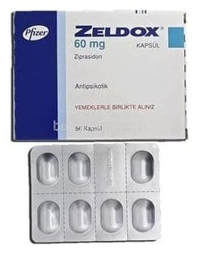

Zeldox 60 mg Kapsül, 56 Adet

Ne için kullanılır
KT · Bölüm 1ZELDOX sert jelatin kapsüldür. 56 kapsül içeren blister ambalajlarda bulunur.
ZELDOX, antipsikotik ilaçlar olarak adlandırılan bir ilaç sınıfına dahildir.
Bir tür psikiyatrik rahatsızlık olan şizofreni belirtilerinin tedavisinde ve belirtilerinin kontrol altında tutulmasında kullanılır. Şizofreni belirtileri şunları içerebilir: • Gerçekte var olmayan şeyler duyma, görme veya hissetme (halüsinasyonlar) • Gerçek dışı inançlar (delüzyonlar) • Olağandışı şüphecilik (paranoya) • Aileden ve arkadaşlardan kopma
ZELDOX erişkinlerde ve 10-17 yaş arası çocuk ve ergenlerde, manik depresif bozukluklarda (bipolar bozukluk) görülen manik veya karma vakaların tedavisinde endikedir. Bipolar bozukluğun manik belirtileri veya karma vakaları şunları kapsayabilir: • Aşırı derecede yüksek veya irite edici (irritabl) duygudurum • Enerji, aktivite ve huzursuzlukta artış • Fikir uçuşması veya çok hızlı konuşma • Dikkatin kolay dağılması • Uyku gereksiniminin az olması
Ziprasidonun elektrokardiyogramınızda (EKG) ritim bozukluğuna yol açma (QT aralığını uzatma) potansiyelini doktorunuz göz önünde bulunduracaktır.